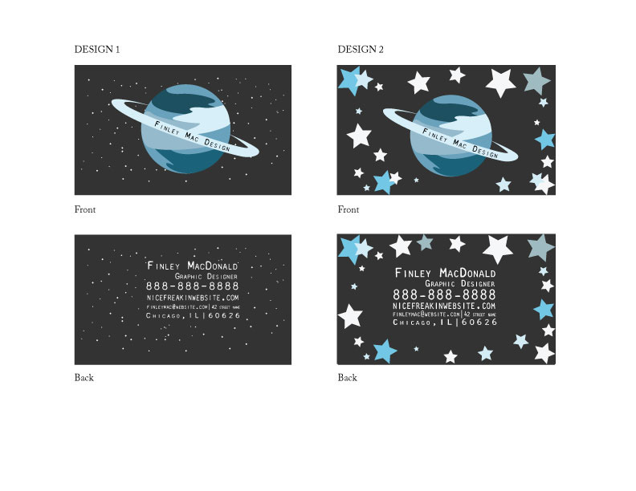
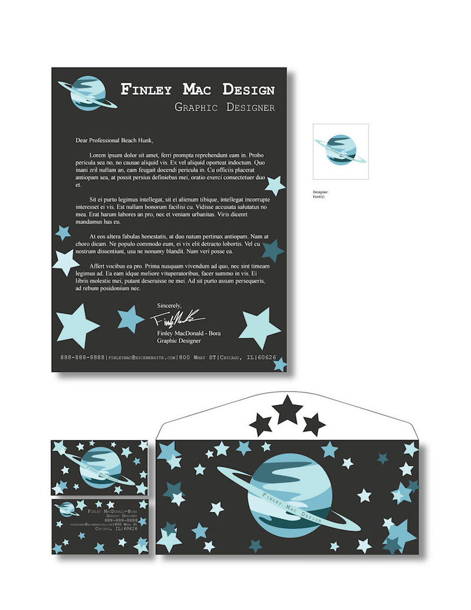
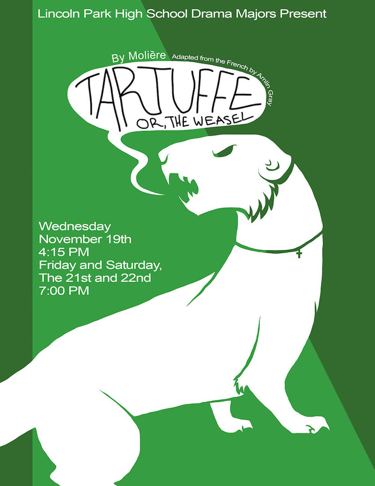
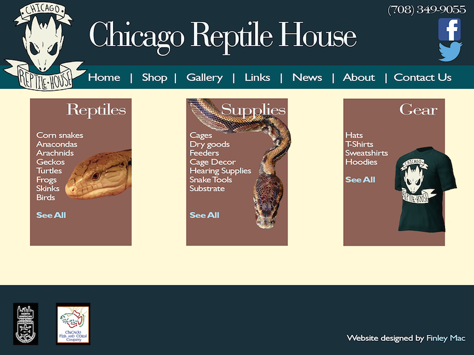
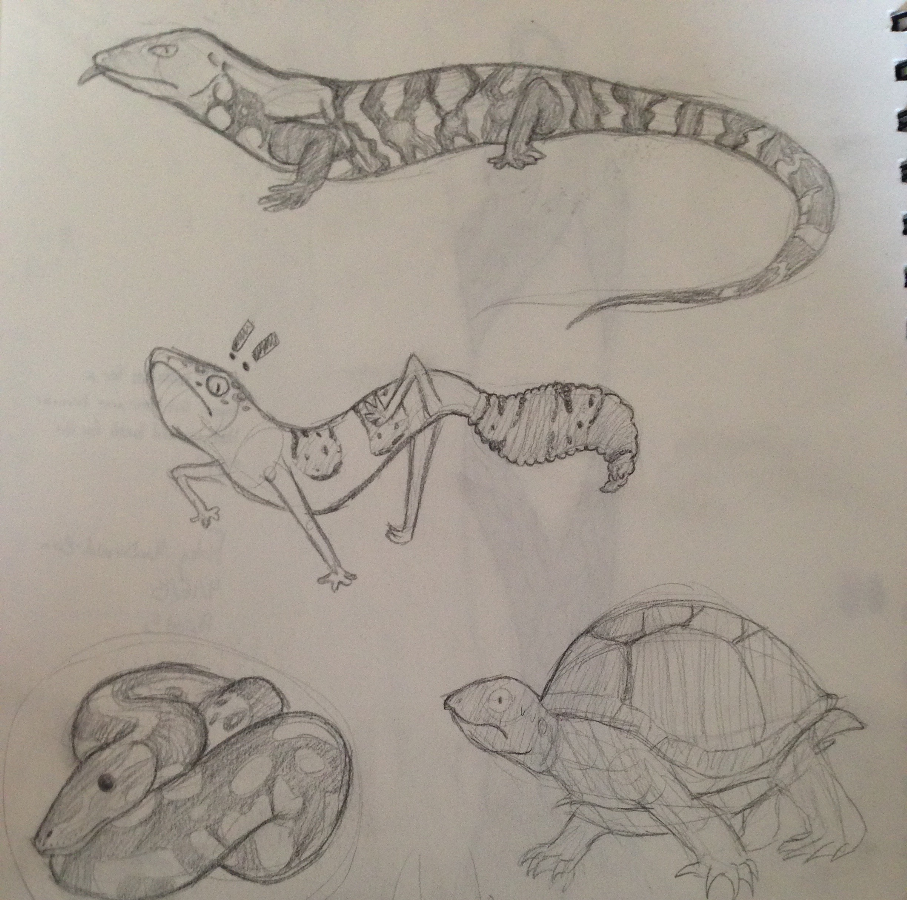

Design & Illustration Work
Design
{kind=link}
Two business card designs for the identity unit in my graphic design class. My theme was space, and I went both realistic (left) and cartoon-y (right). I eventually settled on the right as it carried the color scheme used in the planet and fit the aesthetic. Also, the stars seemed less painstaking at the time. (Turns out that any stars at all are painstaking, but okay.)
{kind=link}
My first attempt at making my identity system. This was the last assignment of the identity unit, and I was really proud of it at the time. Now, of course, I see all kinds of improvements I want to make (and my One Fatal Mistake), but I'll leave that to future systems.
{kind=link}
For some unfathomable reason, this has gotten into multiple art exhibitions. This isn't even the original poster I made. I lost my flash drive four days before the project was due and had to recreate the product of several weeks' work in a few days. A lot of people like the geometric background, where I accidentally made a grid without having the slightest idea what a grid was at the time.
{kind=link}
I like lizards, and I like making identity systems. Why not combine them both and throw in some snakes? Okay, actually, I made this because I had recently gotten a lizard from the Chicago Reptile House and, upon looking at the website, decided I could do better. So I went all out. I made a logo that was actually related to reptiles, and decided to flex my design skills and created this identity system. I also made a mockup of a webpage, which you can see below.
{kind=link}
This is the aforementioned webpage I made. I decided to use actual photographs for this because it felt more relevant than drawings of lizards. On the identity system, it was a stylistic thing, and it fit in that context. However, I feel that on the website it would have looked gimmicky Looking back, though, I'm noticing that I've definitely grown in terms of web design.
Illustration

I made this to advertise commissions and my tumblr. It's a very stylized melanistic blue tongue skink, or just a cool lizard. I don't care what you call it; I mean, it's glowing. It's also cleaved in half because I sliced it so one half could link to commissions and other to the tumblr and honestly, I think it just looked cooler that way. Also, it's easier for the viewer to differentiate between the two links.
{kind=link}
This is more than several months old, but it's held up, which is very unusual. I decided to try a different style using thick, soft lines and overlaying a texture (in this case, marble) to give a sense of completion despite the fact that only minimal shading was used on the head. If I'd done shading like this in my usual style, it wouldn't have worked, it would have looked flat and unfinished. While I haven't done anything else with this style, I liked it, and I might try experimenting with it again.
{kind=link}
This was in practice for the mock identity system I made. The topmost lizard made it in to the final result on the business card, and the gecko below it almost ended up on the bottom of the letterhead. The snake and the turtle had no such luck, because I can't draw either.